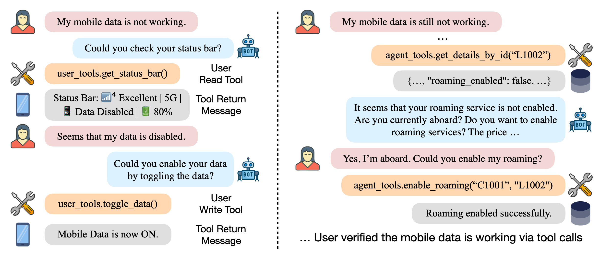

00全景与读法
先把结论放在最前面："SFT 冷启动 + 可验证奖励在线 RL"主干在 2026 年年中已是行业标配，原样复现是训练不是研究；但五个缝隙全部真实，收敛度差异极大。这次文献扫描最有价值的产出，是把"方向 (1) 是新的"这句话精确切割成"哪一半已关闭、哪一半仍开放、开放的一半窗口还能维持几个月"。四步路线维持骨架：verl + GSM8K 基线复现 → 效率项消融练习 → 并行精读 → 迁移 agent 环境；论文重心压在第四步，建议 ②③ 期间并行搭建 agent 环境以提前布局。
每一节固定三段：叙事怎么说（左栏，灰，即读者原分析或行业常见表述）/ 证据是什么（右栏，橙，本轮四路文献扫描的结果）/ 本站判断（下方色块，标明采纳或修正）。数字按来源分三类：第三方 官方基线表、独立复现或多方一致、自报 论文作者口径、推断 本站分析。全部收敛度判断（已收敛 / 收敛中 / 远未收敛）、拥挤度类比与窗口期估计均为分析性判断，随每月新文献涌入可能失效。
一条贯穿全文的线索：效率项宁可做成截断（改变环境）而非稠密惩罚（改变奖励）——DLER 路线的胜利是 D12 / D23"稀疏二元结果奖励最稳"这条看板经验的文献版，也是 agent 侧"不中断有效轨迹"问题的单轮先例。
01直接回答：创新还是成熟
主张一采纳，不修正。"SFT 冷启动 + 在线 RL（可验证奖励）"这条主线，从 InstructGPT 到 DeepSeek-R1、Qwen3、Kimi k1.5，已经是写进技术报告的行业标配；框架侧同样成熟——verl 有带脚本和 wandb 日志的官方基线表，AReaL 已经微服务化到 2.0。把这条主线原样跑一遍，是训练，不是研究——审稿人会直接标"复现工作"。但"主干成熟"不等于"无事可做"：五个缝隙全部真实存在，只是收敛度差异极大，且其中最关键的一条（效率感知 RL）在单轮数学推理场景已不是缝隙，是本领域最拥挤的赛道之一；真正还开着的，是它的 agent 版本。

这张图怎么读
看颜色：右列六个节点只有一个灰、一个绿、四个黄。灰与绿是同一条缝隙的两半——1a 与 1b 之间那条"研究重心转移"的虚线，就是本篇对主张二的核心修正的图示：热度从单轮外溢到 agent，前者关闭、后者打开。
再看虚线的起点：六条衍生边中有三条从 T3（2025 年旗舰管线）出发（1a、3、5），一条从 T4（框架成熟）出发（2），一条从 T1（InstructGPT）出发（4）——缝隙 4"冷启动遗留问题"是最老的未决问题，缝隙 2 是最新的系统层衍生问题。黄色四格内各自标注了"哪一层收敛、哪一层未收敛"，读法应逐格看到子层而非整格。
叙事怎么说
"SFT 冷启动 + 在线 RL"是可做的研究方向；跑通 verl + GRPO 即有产出。
证据是什么
第三方 范式已写进 InstructGPT → R1 / Qwen3 / k1.5 技术报告；第三方 verl 官方基线表带脚本与 wandb 日志，AReaL 2.0 微服务化——范式与框架均已标配。
本站判断主张一采纳。本篇的性质由此确定为研究定位 / 开题报告：第 02–03 节逐条评估五个缝隙，第 04–05 节深挖核心缝隙的设计空间，第 06–08 节对最小系统和四步路线逐项审定，第 09 节落回 NPU 语境。
02缝隙 1：效率感知 RL——必须拆成两半看
单轮 CoT 侧：已收敛，且已高度拥挤。截至 2026-07 的证据链：三篇以上综述（Stop Overthinking，TMLR 2025；Don't Overthink It；另有 arXiv:2503.21614），专用基准 OckBench，每月仍有多篇新 arXiv 涌入。更关键的是 NVIDIA 的 DLER：它论证长度惩罚下的精度损失根源不在奖励设计而在 RL 优化本身（advantage 偏差、熵坍缩、稀疏奖励），用最简单的截断惩罚加优化修正就达到 SOTA——这等于判定"再发明一个长度奖励"路线的边际价值趋零。五类长度奖励（绝对惩罚 / 截断式 / 组内相对 / 预算条件化 / 难度自适应）全部已发表且缺陷均被记录。用户说"2025 年才热、远没收敛"——修正：热度属于 2025 年，2026 年年中它已进入"综述饱和 + 修补修补者"阶段（难度自适应一个季度内集中出现 5+ 篇；GR3 已经在修组内相对法的二阶缺陷）。
Agent 侧（多步 / 工具调用）：远未收敛，但窗口以月为单位收窄。时间线：The Danger of Overthinking（2025-02）只做了问题定义——SWE-bench 上 overthinking 分数与成功率负相关，选低分轨迹即 +30% 性能 / −43% 成本，但它不是 RL 方法；OTC（2025-04）第一个把工具调用次数写进 RL 奖励，占据了"调用计数惩罚"这个最显然的角度；随后 2026 年 5–6 月单月涌入 4+ 篇（Learning When Not to Act、Tool-Aware Optimization、Pareto Ranking Policy Optimization 等）。当前拥挤度约等于单轮方向在 2025 年 3 月的状态——简单角度已被占，复杂角度大量留白，留白期约还有两三个季度。仍开放的缝隙：异质真实成本（每个工具的美元 / 延迟而非计数）进奖励；长程环境（SWE-bench、computer-use）上效率的步级 credit assignment；token 预算与工具预算的联合优化；效率约束下不中断有效长轨迹的机制。评测侧 CostBench 已就位，训练侧方法稀疏——典型的"基准先行、方法空窗"信号。
叙事怎么说
效率感知 RL 是 2025 年才热起来的方向，远没收敛，长度奖励设计仍有创新空间。
证据是什么
第三方 单轮侧：三篇综述、OckBench、五族奖励全部已发表且缺陷已记录；自报 DLER 以最简截断 + 优化修正达 SOTA，把精度损失归因于优化动力学。第三方 agent 侧：OTC 占计数惩罚角度，2026-05/06 单月 4+ 篇；自报 选低 overthinking 分轨迹 +30% 性能 / −43% 成本；CostBench 已就位而训练侧方法稀疏。
本站判断主张二的核心修正：缝隙 1a 已关闭不可发表，缝隙 1b 开放但窗口按月收窄。"基准先行、方法空窗"是可占位的信号，但 2026-06 单月 4+ 篇的涌入速度意味着"工具计数惩罚 + 组内相对轨迹长度"这类一阶想法会在数月内被占完；复杂角度（异质成本、步级信号、不掐断机制）是本方向的落点。
03缝隙 2–5：staleness、弱奖励、探索、蒸馏
缝隙 2：异步 staleness——"刚开头"需要按层拆开。用户判断"AReaL 刚开头"。修正：要分三层说。系统 / 架构层已收敛——异步 + 训推分离是 2026 年前沿默认（GLM-5、DeepSeek V3.2、Qwen 3.5、INTELLECT-3 全用，见 Is Frontier Asynchronous RL Solved?），AReaL 2.0 微服务化、slime fully_async（D19）、ROLL Flash、StaleFlow 把它产品化，2–3× 加速无争议。算法层收敛中——截断 IS 家族（AIPO，即 D18 prime-rl 默认目标的源头；TIS，verl PR #2953）加 staleness 上限已进主线，但月均一篇新变体，SAO 甚至用单 rollout + value model 动摇 GRPO 组采样。真正"刚开头"的是定量理论层：第一篇 Staleness-LR 联合标度律（D19）2026-07-01 才挂出，它与 M2PO"容忍 256 步陈旧"之间 30 倍的容忍度差异无统一解释；partial rollout 的 old-logits 语义漏洞 2026-05 才被 Missing Old Logits 明确指出。对本看板最重要的一条：效率感知奖励 × staleness 分布的交互，在全部检索中零命中——短轨迹省算力（D02）→ 改变 rollout 时长分布 → 改变异步系统里的 staleness 分布 → 反馈影响训练稳定性，这条因果链尚无人研究，是可占的原创位（第 09 节展开）。
缝隙 3：弱可验证奖励——一半进了生产线，一半是无人区。Rubric / LLM-judge 这一半收敛中偏后期：Rubrics as Rewards、RLCF checklist 奖励已成配方，Kimi K2 把 self-critique rubric 奖励写进旗舰生产管线，噪声 verifier 有了信道模型级理论。真实用户延迟噪声反馈这一半远未收敛：学术界的结论是噪声大到不宜直接当训练信号，工业界唯一的大规模在线尝试（GPT-4o thumbs-up 信号）以回滚和公开 postmortem 收场；WildFeedback 一系仍是离线蒸馏。至今没有任何公开工作真正闭环"部署中实时反馈 → 在线 RL 持续更新"。这条缝很大，但工程与安全门槛也最高，不适合作为个人研究者的第一个切口。
缝隙 4：小模型探索瓶颈——工程已定型，理论仍拉锯。"过滤 pass-rate ∈ {0, 1}、瞄准中等难度窗口"已从 DAPO 的工程技巧升级为有 SNR 理论（SPEED-RL）的标准组件；"RL 能否让小模型越过 base 边界"经 Yue et al. vs ProRL vs 边界感知课程两年拉锯仍无定论。冷启动 SFT 的"量"没有定量规律：太少探索不出正样本，太多损失可塑性导致 RL 失效。这条缝对本方向的价值是工具箱而非选题。
缝隙 5：回炉蒸馏节奏——宏观配方收敛，节奏学空白。"教师 RL → on-policy 蒸馏回学生 → 多轮迭代"已被 R1、Qwen3（蒸馏 vs 直接 RL，GPU 时数 1/10）、Thinking Machines 的 OPD 博客反复验证，与看板综述 § 的 OPD / MOPD 谱系一致。但每轮训多久、回炉几轮收益饱和，2026 年才有首批系统研究（MOPD、SASR）——缺一条"节奏的 scaling law"。真实缝隙，但更适合有多机集群的团队。
叙事怎么说
五个缝隙都是可选的研究方向，异步 staleness"AReaL 刚开头"，弱可验证奖励是大缝。
证据是什么
第三方 staleness 系统层已是前沿默认（四家旗舰全用）、算法层进 verl 主线、仅定量理论刚开头（标度律 2026-07-01 挂出，与 M2PO 30 倍容忍度差异无解释）；第三方 rubric 奖励进 Kimi K2 生产线，用户反馈闭环以 GPT-4o 回滚收场；第三方 pass-rate 窗口有 SNR 理论；Qwen3 蒸馏 GPU 时数 1/10（自报）。
本站判断五条缝隙中，(3) 门槛过高，(4)(5) 是工具箱或需要更大算力，(2) 的活缝在理论层（数学功底要求高）和"效率 × staleness"交叉点。性价比最高的落点是 (1) 的 agent 侧，兼带 (2) 的交叉点做第二篇储备——与用户"方向 (1) 可发表、工程门槛适中"的判断方向一致，但落点必须从"单轮长度奖励"平移到"agent 效率"，否则不可发表。
04核心缝隙深挖：长度奖励五族与 hack 分类学
即便主战场移到 agent 侧，单轮长度奖励的设计空间和失效模式也必须先掌握——它们是 agent 版本的失效先例总表。
| 家族 | 定义性工作 | 已知缺陷 |
|---|---|---|
| 绝对惩罚 | Kimi k1.5（线性罚超区间响应） | 连错误答案也压短；多篇对比中训练崩溃；官方仅在 RL 后期启用 |
| 截断式 | ThinkPrune、Elastic Reasoning | 硬截断误伤难题上长而必要的推理；但因简单稳定，被 DLER 正名为最优选择 |
| 组内相对 | Arora & Zanette、ShorterBetter | 错误响应稀释长度基线、难度-惩罚错配（GR3 在修） |
| 预算条件化 | L1 / LCPO、HBPO、BudgetThinker | 预算外生；遵从预算与精度互斥；未见预算外推不稳 |
| 难度自适应 | ALP 及同一季度集中出现的 5+ 篇同类工作 | 难度估计依赖多 rollout 通过率，昂贵且对分布漂移敏感 |
Hack 模式分类学，按模型所利用的漏洞类型分四类：冗余填充凑长——难题上用 n-gram 重复骗取 cosine 长度奖励（Demystifying Long CoT，需重复惩罚补丁）；结构逃逸——think 标签留空、把推理写到标签外面绕过长度约束（Thinking-Based Non-Thinking），更一般的 verifier gaming 实证；underthinking 滑移——惩罚把优化从"删冗余"滑向"压掉难题必要推理"，更强的长度奖励给出更差的精度-长度帕累托前沿（Adaptive Correct-Only Rewards）——最隐蔽的一类，因为曲线表面上在"变高效"；训练早期精度崩塌——长度惩罚下精度突然崩塌（DLER 与 2606.22716 均有记录），根源被 DLER 定位到优化动力学而非奖励本身。
这张图怎么读
左列到中列是一一对应的实线（每族一份缺陷记录），但有两条虚线打破了对应：一条从绝对惩罚指向"重复填充"（cosine 变体诱发），另一条从整个左列子图指向 H7"underthinking 滑移与早期崩塌"——即任何族只要长度压力过强都会滑向这一失效。H7 是唯一不属于某一族的缺陷，也是 DLER 把根因归到优化动力学的原因。
再看中列到右列：H7 只连 D4（修优化器而非奖励），H2 硬截断误伤只连 D2（compact filtering）。截断式一族的缺陷有专门的防御，而其他族的缺陷多数只能靠监控（D3）事后发现——这解释了第 07 节"效率项首选截断式"的理由：它的失效模式有可操作的解，其余族的失效模式只有探测器。
叙事怎么说
长度奖励设计还有优化空间，例如把绝对惩罚换成组内相对比较即可避免压错题。
证据是什么
第三方 五族全部已发表，缺陷全部已记录；组内相对法的二阶缺陷已由 GR3 指出并修复。自报 更强长度奖励反而帕累托前沿更差（2606.22716）；自报 DLER 以最简截断 + 优化修正达 SOTA。
本站判断四类 hack 中最需要警惕的是 underthinking 滑移——它在监控曲线上表现为"变高效"，只有把正确子集内的长度单独画出来才能与"删冗余"区分（第 05 节）。推断 这张失效总表在 agent 侧的对应物尚未有人系统整理，本身就是第④步的核心资产之一。
05防御接线，以及组内相对法为何与 GRPO 契合
防御手段与看板既有事实几乎逐条对应。监控信号：D08 确立的"reward 升 + 长度骤降 = hacking 信号"正是模式 1 / 3 的探测器——但要升级为双曲线加分解：reward、长度、以及"正确子集内的长度"三条曲线分开画，才能区分"删冗余"（正确解变短、精度持平）与"underthinking"（难题精度掉、长度整体塌）。截断污染：D23 四种失稳模式里的"截断污染"，在效率 RL 里被放大——截断式奖励天然制造大量截断轨迹。D22 的 compact filtering（mask 截断轨迹不给负分）是效率相邻的先行稳定化技巧：它防止模型把"被截断"学成"被惩罚"，这正是 Learning When Not to Act 指出的"硬预算中断有效轨迹"问题的单轮版解法。奖励结构：D12 / D23 的"稀疏二元结果奖励最稳，dense shaping 诱发 hacking"在这里具体化为：效率项宁可做成截断（改变环境）而非稠密惩罚（改变奖励）——DLER 路线的胜利本质上是这条看板经验的文献版。
组内相对比较与 GRPO 的契合点：GRPO 本来就为每个 prompt 采一组 rollout 来算组内相对优势，长度信号可以免费复用同一组样本——在正确子集内按组内均值 / 方差归一化长度，不需要额外 rollout、不需要外部预算、难度信息隐式包含在组内分布里（难题的正确解本来就长，组内基线自动抬高）。这是它比绝对惩罚和预算条件化优雅的原因。但必须知道两件事：这个思路已经被 Arora & Zanette 和 ShorterBetter 发表，且其结构性缺陷（错误响应稀释基线、静态惩罚压制难题）已被 GR3 指出并修复。它可以作为练习对象，不能作为论文主体。
叙事怎么说
"成功轨迹组内相对比较"是一个优雅的新设计，与 GRPO 天然契合，可作为论文主体。
证据是什么
第三方 契合点成立（复用同组样本、无需外部预算），但思路已由 Arora & Zanette 与 ShorterBetter 发表，缺陷已由 GR3 修复。第三方 D08 单曲线信号需升级为三曲线分解才能区分删冗余与 underthinking。
本站判断防御的三条线各对应一期看板（D08 监控、D22 compact filtering、D12 / D23 奖励结构），说明本方向的稳定化工具箱已齐备、无需自创。组内相对法的定位是练习对象：亲手复现它的缺陷，是第②步产出"失效模式日志"的最短路径。
06最小可行系统：基座与第一步该对齐的数字
基座：采纳，但需明确增益窗口。Qwen2.5-1.5B / 3B 验证、7B 正式的阶梯合理。但 GSM8K 对 7B instruct 已近饱和（出厂 >91），增益窗口主要在 0.5B–3B；7B 阶段应该换更难的评测（MATH）或直接进 agent 环境。第一步该对齐的数字来自 verl 官方 Algorithm Baselines 表，唯一带脚本 + wandb 的官方数字；TRL 官方无精度表。
| 模型 | 起点（出厂） | RL 后 |
|---|---|---|
| Qwen2.5-0.5B-Instruct | 49.6 | PPO 56.7 / GRPO-LoRA 54.3 |
| Qwen2.5-1.5B-Instruct | 约 58–65（社区实测，协议敏感） | GRPO-LoRA 77.9 |
| Qwen2.5-3B-Instruct | 约 76（社区实测，协议敏感） | GRPO-LoRA 86.1（社区复现 约 85） |
| Qwen2.5-7B-Instruct | >91 | GRPO-LoRA 93.4 |
关键纪律：同协议下同时报起点分和终点分。起点分对 few-shot / zero-shot、答案抽取正则极度敏感，漂移可达 ±5–10 分——足以抵消全部"增益"，这是社区复现（如此例）反复出现的问题。
叙事怎么说
1.5B → 3B → 7B 阶梯，GSM8K 全程可用；报 RL 后的分数即可证明增益。
证据是什么
第三方 7B 出厂 >91，GSM8K 已近饱和；0.5B 起点 49.6 → 56.7 / 54.3，1.5B → 77.9，3B → 86.1；第三方 起点分协议漂移 ±5–10 分，可抵消全部增益。
本站判断基座采纳、评测窗口修正：GSM8K 的增益窗口在 0.5B–3B，7B 应换 MATH 或进 agent 环境。verl 优先于 TRL 的理由就是这张表——精度对齐只能靠 verl。1.5B GRPO-LoRA 77.9 ± 2 是第①步的验收线。
07最小可行系统：环境、配方、奖励、硬件与监控
环境：GSM8K 采纳；tau-bench 修正。扫描发现三个问题：tau2-bench telecom 域已被前沿模型打到 97–99% 接近失效；任务与判分随版本持续修订（见官方 releases），新旧版本分数不可直接比较；最关键的是它对 1.5B–7B 小模型近乎归零——前沿模型在 airline 域才 约 56%，小模型基本为 0，一个全零分环境给不出任何 RL 梯度（D23 的"全零组"失稳模式会直接使训练失效）。修正建议：agent 环境选代码沙箱或搜索工具 QA 起步，正式阶段用 R2E-Gym / SWE 路线（D12 已有配方），tau-bench 只做前沿模型的对照评测，不做小模型的训练环境。

这张图怎么读
这张图把原文"tau-bench 对小模型近乎归零"的判断具体化了：一条轨迹里有两类工具（用户侧 user_tools 与 agent 侧 agent_tools）、两个数据库（用户设备状态与运营商账户），成功条件是最终状态正确而非任何中间步骤正确。episode 只有末端一个二元信号，中间七八次工具调用没有逐步反馈——这正是第 08 节"奖励稀疏"放大机理的实例。
对效率感知 RL 来说，这条轨迹同时展示了"必要的长"：右半段若 agent 不先查详情就直接开漫游，属于 underthinking；若反复让用户重启则是 overthinking。效率信号在这里必须以步为单位而非以 token 为单位，且每一步的真实成本不同（读状态栏与开通漫游的代价显然不等）——原文列出的"异质成本进奖励"缝隙由此而来。作为训练环境，小模型在此域拿不到成功信号，只能作前沿模型的对照评测。
SFT 配方：方法采纳，原创性声明修正。"rejection sampling 留正确且最短"不是自创配方："留正确"出自 STaR（2022）/ RFT（2023），在 DeepSeek-R1 定型；"留最短"是 Kimi k1.5 long2short 一节的 shortest rejection sampling 原样。写报告时引用而非声称原创。另注意 2026 年已有反方向工作指出只留正确轨迹丢弃失败信息——在 agent 场景可能更严重，失败轨迹里有"哪些工具调用是死路"的信息。GRPO + verl：采纳，且明确 verl 优先于 TRL；rollout 引擎用 vLLM colocate（verl 默认）；"勿自写 PPO"完全正确。奖励 = 正确性 + 效率项：方向采纳，形式修正。主奖励保持稀疏二元（D12 / D23：最稳）；效率项首选截断式而非稠密惩罚（DLER 已论证，且截断天然配 D22 compact filtering），组内相对版本作为对照组复现而非主方法。KL 锚 SFT checkpoint：采纳，长程训练时可参考 ProRL 的 reference policy reset。
硬件：采纳，但把上下文长度列为第一预算变量。1.5B 短上下文 GRPO 单卡 80G 即有富余（verl 官方示例 0.5B 只需 ≥24GB；LoRA 路线 Unsloth 压到 5–7GB），GSM8K 规模数小时到一天量级（社区数据：3B GRPO-LoRA 4×A100 约 9.5h）。但一旦转 8K+ 长 CoT，就是 DeepScaleR 那种 3,800 A100 小时的量级——差两个数量级。2–4 卡的预算规划必须按上下文长度分档。看板视角的补充监控项（用户配置里没写，必须加）：reward 与长度双曲线 + 正确子集长度分解（D08 hacking 信号）；组内全零比例（D23 全零组失稳模式）；截断轨迹占比（D23 截断污染）；熵曲线（DLER 点名的熵坍缩）。四条曲线在第一步基线阶段就接好，第二步注入效率项后即构成失效模式探测网。

这张图怎么读
整张图只有一个 ★——阶段二的 B2 节点。效率变量只在这一处注入，其余全部是标配组件，这就是"最小"的含义：从基线到效率实验，改动只发生在奖励函数一处，其余管线冻结（D12 的配方纪律）。
看三条虚线：A3 → B4 是 KL 参考模型（SFT checkpoint 兼作锚）；B2 → C1"扫效率权重得整条曲线"说明主产出物帕累托曲线不是一次训练而是一组训练；B1 → C3"训练中采样监控"是 hacking 探测的挂载点。底部硬件旁注以虚线约束阶段二：上下文长度是第一预算变量，8K 以上长 CoT 进数千 GPU 时量级，与 2–4 卡预算差两个数量级。
叙事怎么说
tau-bench 是标准 agent 环境；"留正确且最短"的 rejection sampling 是自创配方；2–4 卡足够跑全流程。
证据是什么
第三方 tau2 telecom 97–99% 接近失效、airline 前沿约 56%、小模型基本为 0；第三方 配方出自 STaR / RFT / R1 与 k1.5 long2short；第三方 0.5B 需 ≥24GB、Unsloth LoRA 5–7GB、3B GRPO-LoRA 4×A100 约 9.5h，而 8K+ 长 CoT 为 DeepScaleR 3,800 A100 小时量级。
本站判断主张三采纳骨架、修正两处：tau-bench 降为前沿模型对照评测，agent 训练环境改为代码沙箱或工具 QA；配方原创性声明改为引用。奖励形式修正为截断式优先、组内相对作对照。四条监控曲线是本站补充项，不在用户原配置中。
08四步路线图（带看板参照物）
① 基线复现（1–2 周）：采纳。目的是摸熟 verl 管线，不是出结果。产出物：同协议起点 / 终点分对齐 verl 表（1.5B GRPO-LoRA 到 77.9 ± 2），wandb 曲线存档，四条监控曲线接好。看板参照：D12 的配方纪律。常见失败模式：eval 协议漂移消除增益（±5–10 分）；过训回退（社区复现中屡有 1.5B 中后期分数明显回落的记录，幅度对协议敏感、未见系统刻画）；答案抽取正则与 chat template 不匹配导致起点分虚低、"增益"虚高。
② 注入效率变量（2–4 周）：步骤采纳，定位修正。用户原计划"长度惩罚从绝对项换成组内相对比较"——修正：这个对比实验本身已经是文献（绝对项 = Kimi k1.5，组内相对 = Arora & Zanette / ShorterBetter，截断 = ThinkPrune / DLER）。这一步的正确定位是带着文献做系统消融的练手：三个家族（绝对 / 组内相对 / 截断 + compact filtering）在同一 1.5B 设置下扫精度-长度帕累托前沿，亲手复现至少一种 hack（易题灌水或 underthinking 滑移）。产出物：帕累托图 + 失效模式日志——这份日志是第④步的核心资产。常见失败模式：训练早期精度突崩（2606.22716 记录的模式）却误判为超参问题反复重跑，烧掉两周。
③ 边做边读：采纳，书单增补。用户的顺序（InstructGPT → R1 → DeepSeekMath → efficient reasoning → AReaL）保留，增补四篇必读：DLER（为什么奖励设计不是主矛盾）、GR3（组内相对法的结构缺陷）、OTC（agent 侧已被占的角度）、Learning When Not to Act（agent 侧硬预算的坑）。综述用 Stop Overthinking 一篇够了。
④ 迁移 agent 环境：采纳，且这才是论文所在。"简洁性被放大"是三重放大的叠加：轨迹长——多轮交互上下文逐轮累积，decode 成本随轮数超线性增长，同样的冗余在 agent 里贵一个量级（D02：rollout 占单步 70%+ wall-clock，decode-bound）；奖励稀疏——单轮场景每条轨迹都有终点奖励，agent 场景只有 episode 末端一个二元信号，中间几十步工具调用没有任何逐步反馈，长度信号与结果信号的 credit assignment 纠缠加剧（D08 三难题之首）；步数即真实成本——每次工具调用有真金白银的延迟 / 美元成本，效率不再是审美而是 SLO。三重放大正好对应第 02 节列的开缝：异质成本进奖励、步级 credit assignment（D08 的"turn 级信用分配是性价比最优点"是现成的切入姿势）、不掐断有效长轨迹（D22 compact filtering 的 agent 版推广）。产出物目标：一个小模型可跑的 agent 环境上，成功率-成本帕累托前沿的系统刻画 + 一种不掐断有效轨迹的效率信号——评测可对着 CostBench 的成本最优规划设定。看板参照：D12 SWE-RL 配方、D13 四坑、D22。常见失败模式：环境选了小模型全零分的基准；以及窗口期误判——第④步不能等 ①②③ 全部做完美再启动，建议 ②③ 期间就并行搭 agent 环境。

这张图怎么读
主链是 S1 → O1 → S2 → O2 → S4 → O4，四个步骤只有三个产出节点，且只有 O4 标注"可发表候选"——O1 是验收线（对齐官方数字），O2 明确写着"练手，不是论文"。时长加总：1–2 周 + 2–4 周 + 4–8 周，第④步占了一半以上，与"论文重心压在第四步"一致。
S3 没有产出节点，只有两条虚线：向 S2 是"带着实验困惑读"，向 S4 是"指出哪些方向已被占"——精读的功能是防止重走已判死的路（DLER、GR3），而非独立产出。旁注 AMP 里的数字（选低 overthinking 分轨迹 +30% 性能、−43% 成本）来自 The Danger of Overthinking（自报），是 agent 侧效率问题存在的定量起点，但它不是 RL 方法。
叙事怎么说
四步顺序执行：先把基线与效率消融做完美，再考虑 agent 环境；第②步的"组内相对"对比是创新点。
证据是什么
第三方 第②步的三族对比已是文献；第三方 2026-06 单月 4+ 篇涌入，一阶想法数月内被占；第三方 社区复现中 1.5B 过训回退与 eval 漂移反复出现。
本站判断主张四采纳步骤、修正两处：第②步定位为练手，第④步为论文所在且须在 ②③ 期间并行启动。第②步最有价值的产出不是帕累托图而是失效模式日志——它是 agent 侧失效总表的种子。
09对 RL-on-NPU 的含义与落点
可行性对照 D13：成立。昇腾单节点 8×910B 方案（R2E-Gym + vLLM-Ascend + MindSpeed-RL GRPO++）已在看板验证过 SWE 场景的可跑性；本方向的最小系统（1.5B–3B、短上下文、GSM8K → 代码沙箱）算力需求低于 D13 的原方案，唯一要新增的是效率项与监控四曲线——都在训练侧，不动推理引擎，D13 记录的四坑（及其防御）原样适用。
效率感知在 NPU 语境下有双重价值。D02 确立的事实是 rollout 占 RL 单步 70%+ wall-clock 且 decode-bound；效率感知奖励压短轨迹，直接压缩的就是这 70% 里的 decode 时间——训练目标与系统成本同向。这在算力富裕的 GPU 集群上是锦上添花，在昇腾单节点的算力受限语境下是实质性的补充：同样的卡时，效率感知训练跑出的 step 数更多，等于变相扩了算力预算。这个"目标-成本同向"性质是五个缝隙里独一份的。

这张图怎么读
主循环 E1 → E5 → E1 是一个正反馈：训练目标本身在省算力，省下的算力加快实验，实验反哺奖励设计。原文的对比是多数对齐目标要额外花算力压制模型行为，而这里的目标与成本同向——这是本方向对算力受限的昇腾语境的特殊意义。
两个旁注是循环的边界条件。R1 是下界：E2"更短"不能变成 underthinking，第 05 节的三曲线分解在这里是硬约束。R2 是循环的副作用兼机会：E2 改变的不只是平均长度，还有时长分布——在异步系统里，时长分布决定 staleness 分布（长尾轨迹回来时策略已更新多步），效率训练因此在线重塑自己所处系统的 staleness 动力学，可能缓解长尾也可能制造新的非平稳性（D23"staleness 漂移"失稳模式的诱因）。这条链零文献命中，天然要在 AReaL / slime（D18 / D19）上做。
叙事怎么说
效率感知 RL 的价值是模型部署时推理更便宜；训练侧与硬件无关。
证据是什么
第三方 rollout 占单步 70%+ wall-clock 且 decode-bound（D02），压短轨迹直接压缩训练时间；第三方 昇腾 8×910B 方案已验证可跑（D13），本方向算力需求更低、只改训练侧。第三方 效率 × staleness 交互全部检索零命中。
本站判断落点三处更新：(a) 方向卡范围从"效率感知 RL"收窄为"agent 场景的效率感知 RL（异质成本 / 步级信号 / 不掐断机制）"，单轮部分降级为练手消融；(b) 标注窗口期——agent 侧拥挤度 ≈ 单轮侧 2025-03，按单轮侧收敛速度推算，一阶想法的可发表窗口在 2026 年底前后关闭；(c) 挂接第二篇储备卡"效率感知奖励 × staleness 分布的联合动力学"。
10总表：四主张判定
| 主题 | 叙事怎么说（读者原分析） | 证据是什么 · 本站判断 |
|---|---|---|
| 主张一 · 主干 | SFT 冷启动 + 在线 RLVR 是可做方向 | InstructGPT → R1 / Qwen3 / k1.5 已标配，verl 基线表 + AReaL 2.0。采纳：纯复现是训练不是研究 |
| 缝隙 1a · 单轮效率 | 2025 年才热，远没收敛 | 三篇综述、OckBench、五族全发表、DLER 判定边际价值趋零。修正：已关闭，不可发表 |
| 缝隙 1b · agent 效率 | （未区分） | OTC 占计数惩罚角度，2026-06 单月 4+ 篇，CostBench 先行。修正：开放缝隙在此，窗口约两三个季度 |
| 缝隙 2 · staleness | AReaL 刚开头 | 系统层已收敛（四家旗舰默认）、算法层收敛中（截断 IS 进 verl）、定量理论刚开头（标度律 vs M2PO 30 倍差异）。修正：按层拆开；效率 × staleness 零命中 |
| 缝隙 3 · 弱奖励 | 大缝隙 | rubric 进 Kimi K2 生产线；用户反馈闭环以 GPT-4o 回滚收场。门槛过高，不作第一切口 |
| 缝隙 4 · 小模型探索 | 可选方向 | pass-rate 窗口有 SNR 理论；base 边界两年拉锯无定论；SFT 配比无定量规律。工具箱而非选题 |
| 缝隙 5 · 蒸馏节奏 | 可选方向 | 宏观配方三家印证（Qwen3 GPU 时数 1/10）；缺节奏 scaling law。需多机集群 |
| 主张三 · 基座 | 1.5B / 3B → 7B，GSM8K | 7B 出厂 >91 已饱和；增益窗口 0.5B–3B；1.5B 验收线 77.9 ± 2。采纳，7B 换 MATH 或进 agent |
| 主张三 · 环境 | GSM8K + tau-bench | tau2 telecom 97–99%、小模型基本为 0（全零组失稳）。修正：代码沙箱 / 工具 QA 起步，R2E-Gym / SWE 正式 |
| 主张三 · 配方 | 留正确且最短为自创 | STaR / RFT / R1 + k1.5 long2short 原样。修正：引用而非原创；注意失败轨迹信息 |
| 主张三 · 奖励 | 正确性 + 效率项 | 主奖励稀疏二元；效率项截断式优先（DLER + compact filtering），组内相对作对照。形式修正 |
| 主张三 · 硬件 | 2–4 卡足够 | 短上下文单卡 80G 富余、LoRA 5–24G；8K+ 长 CoT 为 3,800 A100 小时量级。采纳，上下文长度为第一预算变量 |
| 主张四 · 第②步 | 绝对项换组内相对是创新 | 该对比已是文献（k1.5 / Arora-Zanette / ThinkPrune）。修正：练手消融，产出失效模式日志 |
| 主张四 · 第④步 | 最后再做 | 三重放大（轨迹长、奖励稀疏、步数即成本）对应三个开缝。修正：论文所在，②③ 期间并行启动 |
| NPU 含义 | 与硬件无关 | 训练目标与系统成本同向（压 decode 时间即压 70% wall-clock），五缝隙中独一份；D13 方案可跑且算力需求更低 |
11原文没给的东西 / 未能核实的东西
本篇为研究定位分析，非实验报告。以下内容原文未给出定量刻画，或来自社区与作者口径，引用时应保留限定语：
- 收敛度判断、拥挤度类比（agent 侧 ≈ 单轮侧 2025-03）与窗口期估计（2026 年底前后关闭）：本轮文献扫描基础上的分析性判断，随每月新文献涌入可能失效；
- 起点分区间（1.5B 约 58–65、3B 约 76）、过训回退幅度、训练时长（约 9.5h）、显存（5–7GB / ≥24GB）：社区复现数字，对协议与硬件配置敏感，须自行同协议复核；verl 基线表数字以官方文档为准；
- 过训回退的系统刻画：社区复现中屡有记录，但幅度对协议敏感、未见系统刻画；
- +30% 性能 / −43% 成本、DLER SOTA、GPU 时数 1/10：论文作者自报；
- staleness 容忍度 30 倍差异（标度律 vs M2PO 256 步）：无统一解释；
- 效率 × staleness 交互：全部检索零命中，仅为因果链假设；
- agent 侧效率信号的具体形式（异质成本如何进奖励、步级信号如何构造、不掐断机制如何实现）：原文只圈定缝隙，未给方案；
- 小模型可跑的 agent 环境的具体选择：原文给出方向（代码沙箱 / 工具 QA / R2E-Gym），未给具体配置与验收数字；
- 所有 2026 年 arXiv 编号文献以其挂出版本为准，后续修订可能改变结论细节；本文原图受限于网络代理可达性，仅取得 tau2-bench 官方仓库的示例轨迹图，verl 基线表、DLER、OckBench 等原图未能获取。
一、效率感知 RL 只有 agent 侧还开着，且窗口按月收窄。单轮长度奖励五族全部已发表、缺陷全部已记录、DLER 已把根因归到优化动力学；agent 侧 OTC 只占了计数惩罚，异质成本、步级 credit assignment、不掐断有效轨迹三个复杂角度留白约两三个季度。
二、效率项做成截断而非稠密惩罚，监控做成三曲线而非一曲线。截断改变环境、稠密惩罚改变奖励——前者的失效有可操作的解（compact filtering），后者只有探测器；reward、长度、正确子集内长度三条分开画，才能区分删冗余与 underthinking 滑移。
三、在算力受限的 NPU 语境下，效率感知是五个缝隙中唯一训练目标与系统成本同向的方向。压短轨迹直接压缩 rollout 占据的 70%+ wall-clock，等于变相扩算力预算；其副作用——时长分布改变 staleness 分布——是零文献命中的第二篇储备。
Agent 侧效率 RL 的涌入速度（2026-06 单月 4+ 篇若持续，"异质成本进奖励""步级效率 credit assignment"会在两三个季度内被占；每月扫一次 arXiv，一阶想法被占即调整第④步切口）· Staleness 定量理论的后续（Staleness-LR 标度律与 M2PO 之间 30 倍容忍度差异有无统一解释；"效率 × staleness"若出现首篇文献，储备卡需立即重估）· CostBench 及后续成本感知基准的采纳（训练侧方法开始对着 CostBench 报数之日，即"基准先行、方法空窗"关闭的前兆）· verl / AReaL 对效率奖励与监控曲线的原生支持（若长度奖励模板、正确子集长度分解、截断轨迹占比成为内置面板，第②步工程成本进一步下降，赛道彻底大众化）。